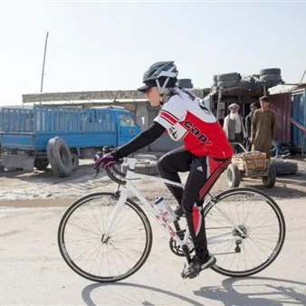

mer 14 ott · dalle 20:30
Proiezione documentario “Afghan cycles" di Sarah Menzies
Mercoledì 14 ottobre 2026 - Dalle ore 20:30 Ritrovo presso la sala consiliare del comune di San Pietro al Natisone Proiezione di “Afghan cycles”, documentario di Sarah Menzies (Stati Uniti, Francia, Afghanistan, 2018) che racconta la straordinaria battaglia di un gruppo di donne…
 Indicazioni
Indicazioni
- Costi e prenotazioni
- Costo non indicato · Prenotazione non indicata
- Programma
- Programma da verificare. Apri la fonte ufficiale per orari e possibili aggiornamenti.
- In caso di maltempo
- Nessuna indicazione specifica pubblicata.
- Note
- Acquisito automaticamente dalla fonte.
L’EVENTO
Descrizione completa
Il mondo dello sport si tinge sempre più di rosa. Ad ingrandire le fila della pratica sportiva, sia agonistica che amatoriale, è sempre di più la componente femminile, anche nelle discipline più rischiose e adrenaliniche. Lo si nota anche sui sentieri del Cammino delle 44 chiesette delle Valli del Natisone , dove a rispondere al suggestivo richiamo di arte, storia, natura, panorami e trekking sono tantissime e sempre più numerose le donne. Ecco perché la Pro Loco Nediške Doline – Valli del Natisone ha deciso di fare un omaggio alle sue affezionate escursioniste, ospitando con 3 appuntamenti il Festival dedicato al binomio donne e sport “ Endorfine rosa shocking ” che si tiene annualmente a Venezia, a cura di Laura Aimone, grande esperta di cinema e appassionata di sport, consulente di alcuni tra i più importanti festival cinematografici a livello mondiale.
Mercoledì 14 ottobre spazio all’emozionante “Afghan cycles”, documentario di Sarah Menzies (Stati Uniti, Francia, Afghanistan, 2018) che racconta la straordinaria battaglia di un gruppo di donne afgane che per combattere la discriminazione, gli abusi, la soppressione oppressiva della voce femminile in tutti gli aspetti della società afghana, rivendicano il loro diritto di continuare a praticare il ciclismo, nonostante le barriere culturali, la mancanza di infrastrutture e le minacce di morte, in nome della forza e della libertà che regala questo sport.
Laura Aimone lavora nel mondo del cinema da 20 anni, collaborando con alcuni dei Festival più importanti a livello internazionale tra cui la Mostra internazionale del Cinema di Venezia, la Berlinale, il Giffoni, il Festival di Cinema di Edimburgo in Scozia, l’Ajyal Film Festival in Qatar, il Film Festival Awards di Macao in Cina e il Red Sea Film Festival in Arabia Saudita. Ha ideato e cura da nove anni il festival di film su donne e sport “Endorfine rosa shocking” che si tiene a Venezia all’inizio dell’autunno.
Per maggiori info : https://www.aim-one.it/endorfine-rosa-shocking/
IG : endorfine_rosa_shocking
Film in lingua originale sottotitolato in italiano
IL PROGRAMMA
Programma e orari
Appuntamenti raccolti dalle fonti elencate. Dove manca un orario, non è ancora disponibile in questa scheda.
Programma pubblicato
- Dal 2026-10-14 al 2026-10-14
INFORMAZIONI UTILI
Prima di partire
- Controllare la fonte prima di partire.
ORGANIZZAZIONE